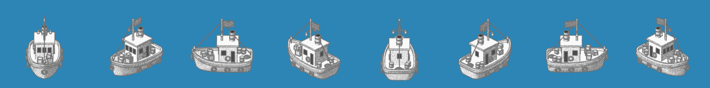
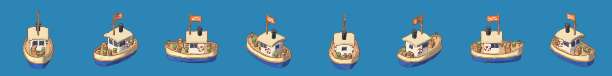
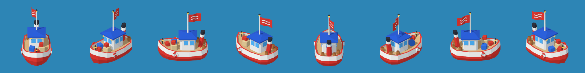
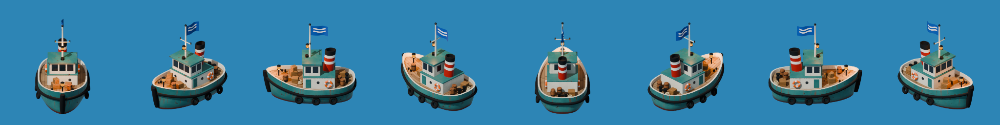
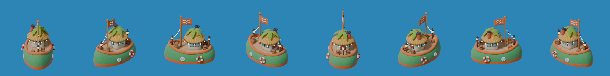
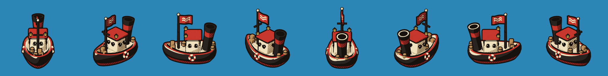
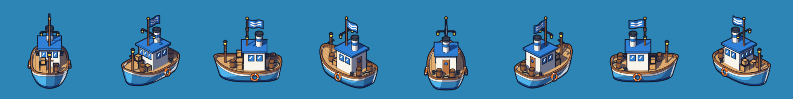
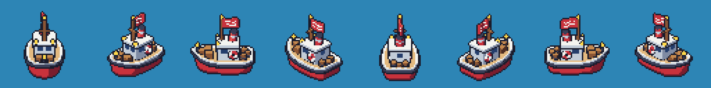

Colores de los barcos
Estado: muestra. Generado por tools/barcos/guia_colores.py desde docs/barcos/barcos.json. Cada color se lee del script de Blender del barco, así que esta página no se edita a mano: se regenera.
«En pantalla» agrupa en 6 colores los píxeles opacos del render ampliado de cada barco; esos tonos salen de la luz, la sombra y el contorno, por eso no coinciden con la paleta de diseño. «Contraste con el mar» toma, de los colores que ocupan al menos el 10 % del barco, el más parecido al mar o a las olas del juego y da su distancia ΔE76. Escala orientativa: menos de 20 se confunde, de 20 a 30 poco contraste, más de 30 se distingue. Los colores de marca también son muestra hasta que Álvaro los apruebe.
Referencias
#F26A1Btools/blender/ship.py, BOIA_PALETTE_MUESTRA (muestra)
#12233Ftools/blender/ship.py, BOIA_PALETTE_MUESTRA (muestra)
#0F5F7Dpackages/engine/src/water.ts, capa base
#2A8FAEpackages/engine/src/water.ts, capa de olas
Resumen
| Barco | Más visibles | Contraste con el mar | Más cerca del naranja BOIA | |
|---|---|---|---|---|
 | B01 Boceto a lápiz | ΔE 29 · poco contraste | Tramado · ΔE 82 | |
 | B02 Acuarela ilustrada | ΔE 34 · se distingue | Bandera · ΔE 6 | |
 | B03 Low-poly | ΔE 47 · se distingue | Caja roja · ΔE 25 | |
 | B04 Semi-realista | ΔE 23 · poco contraste | Salvavidas · ΔE 2 | |
 | B05 Arcilla, maqueta | ΔE 40 · se distingue | Franja de flotación · ΔE 0 | |
 | B06 Cartoon años 30 | ΔE 40 · se distingue | Luz · ΔE 28 | |
 | B07 Cel-shaded cómic | ΔE 27 · poco contraste | Salvavidas · ΔE 7 | |
 | B08 Pixel art | ΔE 28 · poco contraste | Farol, sombra · ΔE 17 |

B01 · Boceto a lápiz
Nombre: sin nombre · script tools/blender/styles/01_boceto_lapiz.py
Remolcador dibujado a lápiz sobre papel: casco claro, tramado gris en las sombras, neumáticos en el costado y cajas en cubierta.
En pantalla (medido en el render)
Notas de render
- Monocromo: no admite skins de color.
- El tramado va en coordenadas de pantalla y se queda quieto si el barco se balancea.
Papel (relleno)
PAPER[0]PAPER[1]PAPER[2]Grafito
HATCH_1HATCH_2LINE_GRAYPlanos sin sombra
FLAT.glassFLAT.ropeFLAT.windowFLAT.soot
B02 · Acuarela ilustrada
Nombre: sin nombre · script tools/blender/styles/02_acuarela_ilustrada.py
Remolcador de casco azul con franja y toldo crema, chimenea negra, macetas con plantas y bandera naranja con olas.
En pantalla (medido en el render)
Notas de render
- Las sombras son un glaseado azul violeta.
- En el informe 01 el casco azul se confundía con el fondo azul de las capturas; el velo semitransparente ensucia otros fondos.
Casco
PAL.hullPAL.creamCubierta y madera
PAL.deckPAL.woodPAL.ropeCaseta
PAL.cabinPAL.awningPAL.windowChimenea y metal
PAL.chimneyPAL.metalPAL.lanternBandera y salvavidas
PAL.flagPAL.ring_redPAL.ring_whiteCarga y plantas
PAL.cratePAL.crate_framePAL.barrelPAL.potPAL.leafPAL.leaf2PAL.flowerLuz y técnica
GLOWSHADOW_TINTPAPEROUTLINE_COLOR[0]OUTLINE_COLOR[1]
B03 · Low-poly
Nombre: sin nombre · script tools/blender/styles/03_low_poly.py
Remolcador de facetas limpias: casco rojo y blanco, caseta blanca con techo azul, cajas de colores y bandera roja con olas.
En pantalla (medido en el render)
Notas de render
- Colores planos sin contorno: limpio pero con poca personalidad.
- Resolvió la bandera de canto plegándola y abriéndola 24°.
Casco
PAL.redPAL.whitePAL.rimPAL.bulwark_inPAL.fenderCubierta y caseta
PAL.deckPAL.cabinPAL.roofPAL.glassPAL.mastChimenea y bandera
PAL.funnel_darkPAL.flagCarga
PAL.crate_redPAL.crate_bluePAL.crate_beigePAL.barrelPAL.barrel_topLuz
LANTERN
B04 · Semi-realista
Nombre: sin nombre · script tools/blender/styles/04_semi_realista.py
Remolcador veterano: casco verde azulado gastado con óxido, neumáticos negros, caseta crema, chimenea roja y blanca y bandera azul.
En pantalla (medido en el render)
Notas de render
- El view transform AgX desatura los colores al renderizar.
- Sin contorno se funde con el agua; el óxido queda en ruido de 1 o 2 px a tamaño de juego.
Casco
TEALTEAL_FADEDBOOT_REDRUSTRUST_DARKGRIMERUBBERCaseta
CREAMCREAM_FADEDGLASSCubierta y madera
WOOD_AWOOD_BWOOD_DARKROPEChimenea y bandera
FUNNEL_REDFUNNEL_WHITESOOTFLAG_BLUECarga y salvavidas
CRATE_ACRATE_BBARRELIRONRING_ORANGERING_WHITELuz
LAMP
B05 · Arcilla, maqueta
Nombre: sin nombre · script tools/blender/styles/05_arcilla_maqueta.py
Remolcador de juguete blando: casco verde redondo con franja naranja, caseta con techo de paja y palmera, guirnalda de farolillos y bandera naranja.
En pantalla (medido en el render)
Notas de render
- Usa el view transform AgX Punchy, que desatura algo.
- Sin contorno; las skins temáticas piden modelado nuevo.
Casco
C.hullC.bandC.rollCubierta y madera
C.deckC.woodC.wood_darkC.barrelCaseta
C.wallC.thatchC.leafC.glassC.frameC.doorChimenea y bandera
C.chimneyC.ironC.flagC.darkSalvavidas
C.redC.whiteGuirnalda
C.bulbC.glowC.wire
B06 · Cartoon años 30
Nombre: sin nombre · script tools/blender/styles/06_cartoon_anos_30.py
Remolcador de dibujo animado antiguo: casco negro con franja roja y crema, chimenea alta, ojos de buey que parecen ojos, semitono de imprenta y bandera roja.
En pantalla (medido en el render)
Notas de render
- Paleta de 3 colores más tinta: una skin «fiesta» rompería el estilo.
- El semitono va en coordenadas de pantalla.
Negro (luz, sombra, semitono)
TONES.black[0]TONES.black[1]TONES.black[2]Rojo (luz, sombra, semitono)
TONES.red[0]TONES.red[1]TONES.red[2]Crema (luz, sombra, semitono)
TONES.cream[0]TONES.cream[1]TONES.cream[2]Madera (luz, sombra, semitono)
TONES.wood[0]TONES.wood[1]TONES.wood[2]Tinta y luz
INKGLOW
B07 · Cel-shaded cómic
Nombre: sin nombre · script tools/blender/styles/07_cel_shaded_comic.py
Remolcador de cómic con tinta de tres grosores: casco azul cielo con obra viva azul profundo y franja blanca, caseta blanca con techo azul y bandera azul con olas blancas.
En pantalla (medido en el render)
Notas de render
- Sombras duras teñidas de azul cómic y brillo de borde.
- En el informe 01 el casco azul se confundía con el fondo de las capturas; los faroles se empastan a tamaño de juego.
Casco
COLORS.hullCOLORS.bootCOLORS.stripeCOLORS.wood_rimCubierta y madera
COLORS.deckCOLORS.woodCOLORS.doorCOLORS.ropeCaseta
COLORS.cabinCOLORS.roofCOLORS.glassCOLORS.glintChimenea y bandera
COLORS.chimneyCOLORS.chimney_bandCOLORS.hoopCOLORS.flagCOLORS.flag_wavesCarga y salvavidas
COLORS.crateCOLORS.crate_frameCOLORS.ring_aCOLORS.ring_bLuz y técnica
COLORS.lanternCOLORS.brassSHADOW_TINTRIM_TINT
B08 · Pixel art
Nombre: sin nombre · script tools/blender/styles/08_pixel_art.py
Remolcador en pixel art de 64 px de arte con contorno de 1 px: casco rojo y blanco, caseta blanca, chimenea roja, cajas de madera y bandera roja.
En pantalla (medido en el render)
Notas de render
- Paleta fija de 16 colores: es su identidad.
- Obliga a que el resto del juego sea pixel art.
Contorno y hierro
PALETTE[0]PALETTE[1]Rojo
PALETTE[2]PALETTE[3]PALETTE[4]Blanco
PALETTE[5]PALETTE[6]PALETTE[7]Madera
PALETTE[8]PALETTE[9]PALETTE[10]PALETTE[11]Farol y cristal
PALETTE[12]PALETTE[13]PALETTE[14]PALETTE[15]